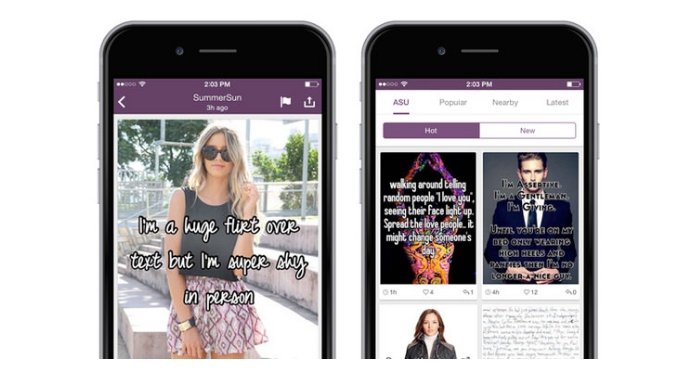
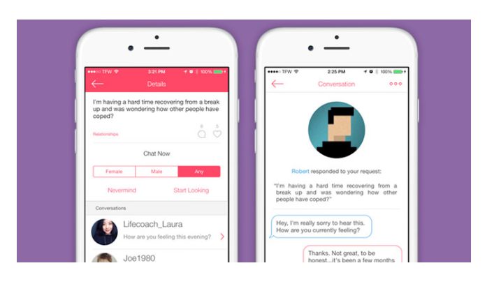
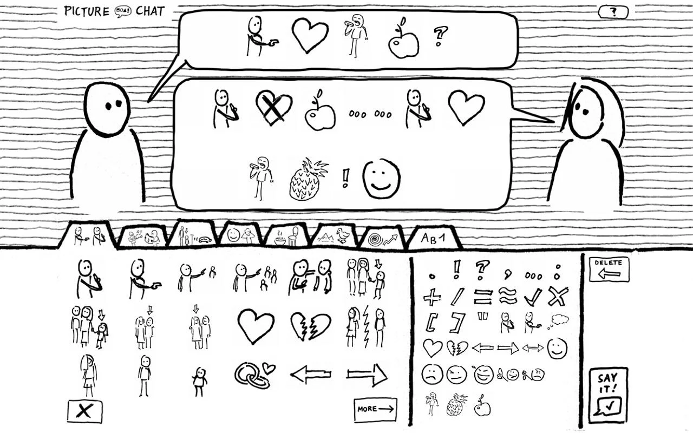
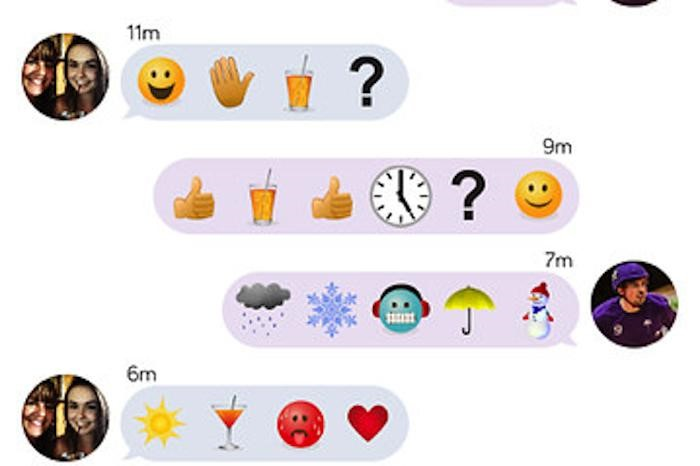
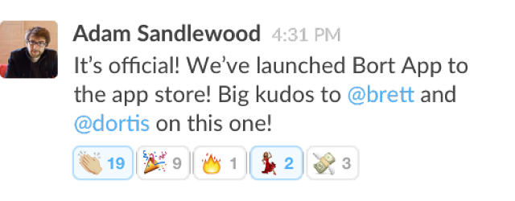
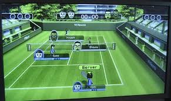
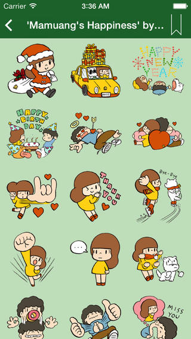
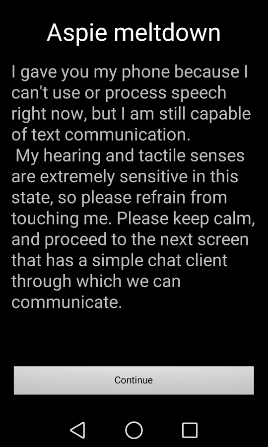
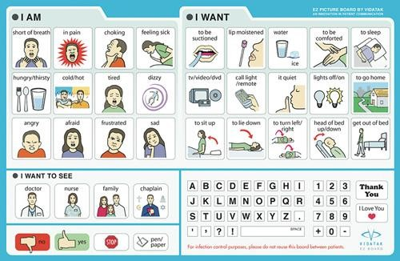

As inspiration for our forthcoming app, we did some research to see what is available in the current market.
"Psst is a chat platform where there is no chat history or chat ID's. You can share political views, confessions, secrets, deal with grief and other less happy life experiences or just share corny jokes with other users. Your post stays active for 48 hours and is gone forever. Private chats stay for half a minute, tops."
The main design characteristics that I can see being similar to our design are the privacy settings that automatically delete posts and private chats after a certain period of time. Although the exact time frame for deleting messages for our app still needs to be discussed and put through user research, the idea behind typing something in an online space that doesn't stay to haunt you is something we would like to emulate. One main difference that we would have is to keep the messages only on the local device, since this is an in person peer-to-peer messaging app that exists only on a single, local device. Because Psst is designed to act as more of a stranger-to-stranger messaging network across the Internet, there are some elements that won't be included in our app, such as the search tags that allow different messages to be posted in a certain category (Figure 1). However, l did like the clear design and layout of the tags as simple solid color rectangles arranged in a block like pattern on the screen. Something else that I liked about Psst's user interface was how simple and clear the settings screen was. It makes it very easy to change preferences and highlights the main differences that are available to view in the app content.
(left) The main app screen; (center) Conversation tags; (right) Simple and clear settings
(left) An example of a user's feed; (right) A closer look at a particular conversational topic with comments
"Here is an app that offers a fun way to share anything on your mind via memes. Discover Whispers by topics that interest you. You can write your thoughts, feelings, reaction, or responses and post it with a background photo. If you like to have more private talks, just the private messaging feature here."
"Kindly is an anonymous application with a compassionate community of helpful listeners who will listen to you vent problems or ask questions you are uncomfortable asking people around you. You can also turn the tables and be a life coach or a listening ear to someone with a problem. Chat openly in a threaded conversation feed or go 1-on-1 if the situations requires it."
"You and a friend share a tablet to talk not by speaking... but by typing pictures! Turn by turn, a sentence is created by combining any of the over 500 images."
Pictures are sometimes worth a thousand words. We can build our platfrom to allow users to draw simple black and white sketches and send it to the chat window.
This chat interface cleverly changes the dynamic of a digital conversation by replacing words with pictures. Although words are more straight forward, simple sketches can tell a lot more sometimes. While in a non-verbal environment, people are often more comfortable expressing themselves through graphics. Therefore, for our user interface we can incorporate this "sketching mode" as one of the messaging options. However, we would not use their exact mechanism since they have pre-defined sketches instead of letting users sketch themselves. Ideally, our platform would allow our users to do free sketches as well as to choose from existing sketches and other graphics (emojis, pictures, etc.).
We could allow our users to use their facial/body language to communicate through photo/video messages.
Emojis, Slack reactions, and other "icon" features for chats and text messages.
 Existing tools are used to communicate with both images and text--often in ways which were not originally intended. Emojis, for example, are chiefly used for one-off responses or to emphasize a text-based message. They can--and do--serve as the "body" of some communications, but both the repertoire and the methods of selecting them aren't intended for "full" discussion and conversations. Reactions in Slack, too, are almost entirely one-way messages; a solution in the nonvocal-communication space could overcome these pain points with a revamped selection of messages, in a way which facilitates a "back-and-forth" dialogue.
Handing off pen-and-paper for communication is something of a low-tech solution for nonvocal communication--an analog tool with a wide range of possible messages (drawings, handwriting, etc.), which keeps - at least for the short-term - a conversation history; if participants have different handwriting or use different pens/pencils, this can also help keep track of who says what. This solution may not be the most elegant: writing can produce a bottleneck (either in speed, or in parsing messily-written messages), and some users may find "passing notes" to be unprofessional, juvenile, or simply physically cumbersome; nonetheless, the interaction bears consideration for our own interface. Here, digital solutions should keep most of the benefits, or relieve the major pain points, of their analog alternatives.
American Medical ID makes physical Medical IDs that inform others of possible health problems. Their products are unintrusive and fit into the daily lives of users. Communicating the reason for being nonverbal should be similarly unintrusive and effective at communicating to others without stressing others out. Just like Medical IDs shouldn't alienate or isolate their users, being nonverbal shouldn't exclude people from social interactions. However, even though the Medical ID is unintrusive, it also needs to be omnipresent. They need to balance being inconspicuous with being practical. An unintrusive Medical ID doesn't serve its purpose if it isn't useful when it is needed.
These games allow two or more people to each have a controller that is attached to the same computer, allowing them to co-inhabit both a physical space and a virtual space. There are multiple simultaneous controls, which could be useful if we'd like to create a virtual conversation space for people who are using the same device.
In this picture, there are four players participating in a game of virtual tennis. Each person has a controller.
Pictograms, Pictionary, and Charades are communications that happen without audible words (or without words entirely). The ways people guess at meanings and what they tend to draw in Pictionary could give us ideas about what sort of pictures can be created and understood quickly, and those pictures could become some of the options in our interface for creating messages. Additionally, pictionary can be a communication between more than two people, and people can help each other translate the pictures.
An expensive software designed for children who are autistic which allows them to create sentences by choosing pictures. The pictures are associated with words, and then the software reads the words aloud. It's software meant to both facilitate communication in a way that works well for those children and also meant to encourage them to use the communication that works well for other people. It is not two-way: usually one person uses the software and the other person replies by speaking aloud. It is customizable and contains tens of thousands of pictures. It also costs $150.
The interface has a grid of pictures, each with a word over it. At the top there is a text line, and as the user chooses pictures the corresponding words appear on the line at the top. Once the user is done entering words, the program reads the line of text aloud.
Google Hangouts allows users to share emotions in a light but effective way. Users might require a way of communicating their feelings or actions nonverbally and without text.
Emergency chat is a large inspiration for this project. Emergency chat allows users to inform others of the reasons for being nonverbal and communicate the reason for using the chat app.
Users can chat collaboratively in the same way that they can use a notebook to write back and forth. The benefit of this over other solutions is that users can be chatting concurrently. They both know and can respond to what the other user is saying in that moment.
(offline tool; used in speech therapy, hospitals, AAC, etc.)
e.g. this:
Typing in a message without sending it, writing a sentence into a blank document, etc., then showing it to someone nearby in-person--essentially a quicker/non-permanent, bulky method of passing notes.
Snapchat allows users to send drawings, images, and text
https://www.autismspeaks.org/family-services/resource-library/assistive-technology
https://www.autismspeaks.org/autism-apps
https://www.autismspeaks.org/science/resources-programs/autism-treatment-network/tools-you-can-use/visual-supports